Olá! Sou Ana Luiza Wolpert Alves, psicóloga clínica dedicada ao cuidado de transtornos de humor, ansiedade e personalidade em adolescentes e adultos (on-line), e ao acompanhamento clínico infantil com olhar individualizado e afetivo.
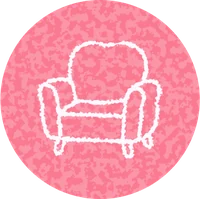
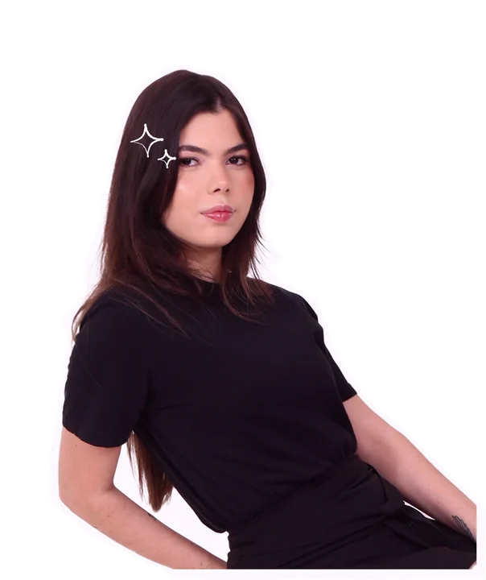
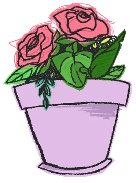
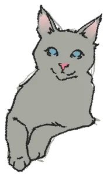
Cada cantinho deste espaço representa um pilar do cuidado com a sua saúde emocional. Toque nos elementos abaixo para descobrir como funciona a terapia na prática:
Na psicoterapia, o primeiro passo é construir uma aliança terapêutica segura. O sofá simboliza a escuta ativa, ética e livre de julgamentos, onde adolescentes e adultos encontram espaço para nomear angústias, compreender padrões emocionais e construir autonomia.
Muitas vezes dar o primeiro "oi" no WhatsApp dá frio na barriga. Selecione abaixo o que faz sentido para o seu momento e preparamos sua mensagem de primeiro contato para enviar em 1 clique.
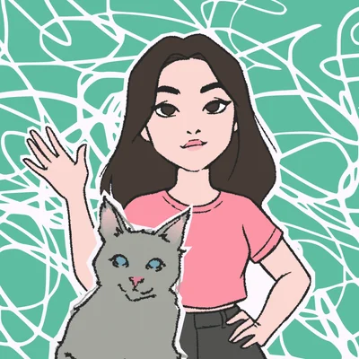
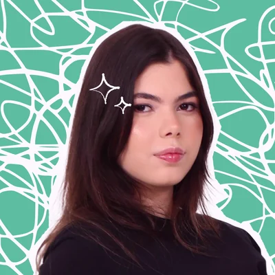
A respiração diafragmática reduz a ativação fisiológica da ansiedade ao sinalizar segurança para o seu corpo. Acompanhe o ritmo visual ao lado:
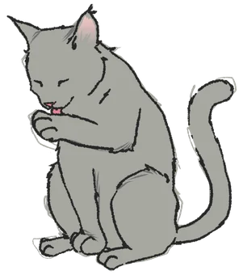
Pronto para começar Toque em Iniciar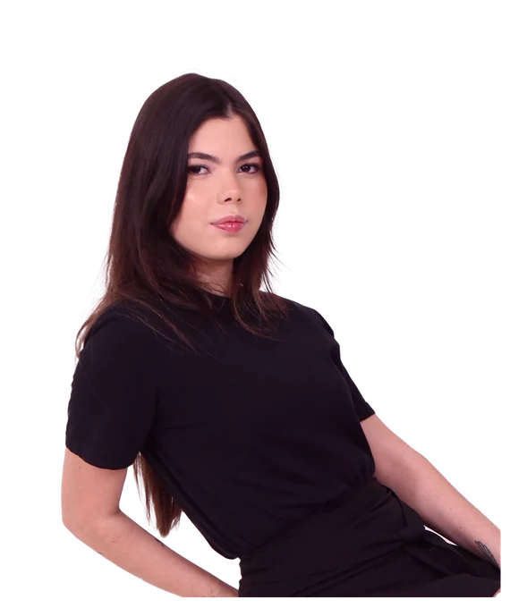
Psicóloga Clínica • CRP 02/31623
Formada em Psicologia, pós-graduanda em Terapia Cognitivo-Comportamental (TCC) pela PUCRS e com estudos direcionados à Terapia Comportamental Dialética (DBT).
Prática pautada na ética, no respeito à singularidade e no aprendizado científico contínuo.
Consultório Particular • Instituto Entrelaçadas • PsyMeet
Atendimento psicológico individual on-line para adolescentes e adultos, incluindo acolhimento ético a pessoas em vulnerabilidade social com intervenções baseadas em TCC.
Psicóloga clínica no acompanhamento de crianças autistas (TEA), aplicando técnicas adaptadas às necessidades individuais de desenvolvimento e regulação.
PUCRS (Pontifícia Universidade Católica do RS)
Pós-graduação lato sensu em Terapia Cognitivo-Comportamental, aprofundando protocolos para transtornos de humor, ansiedade e personalidade.
UniSãoMiguel • Clínica Escola & Educação Infantil
Formação completa com estágios em clínica escola (estudos de caso e intervenções clínicas) e observação comportamental infantil.
Clique no cartão abaixo para girar entre frente e verso ou salvar o contato profissional da psicóloga Luiza Wolpert diretamente na agenda do seu celular.
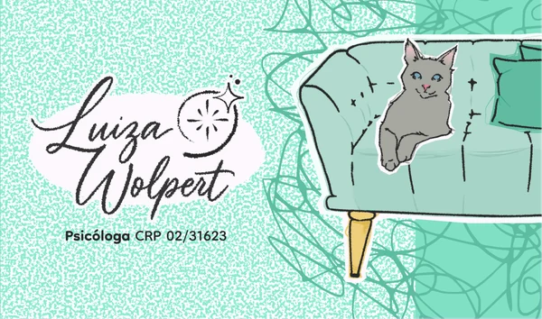
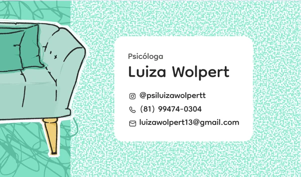
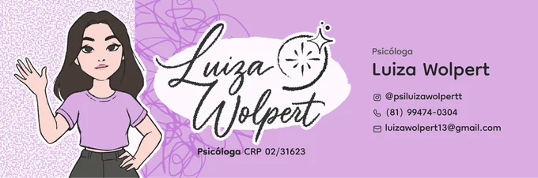